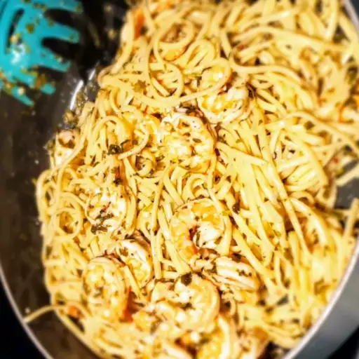

Shrimp Lemon Pepper Linguini

So easy to make, done in minutes, and absolutely delicious. Keeps well in the fridge, too!
Ingredients:
- 1 (8 ounce) package linguine pasta
- 1 tablespoon olive oil
- 6 cloves garlic, minced
- ½ cup chicken broth
- ¼ cup white wine
- 1 lemon, juiced
- ½ teaspoon lemon zest
- salt to taste
- 2 teaspoons freshly ground black pepper
- 1 pound fresh shrimp, peeled and deveined
- ¼ cup butter
- 3 tablespoons chopped fresh parsley
- 1 tablespoon chopped fresh basil
Steps:
- Bring a large pot of lightly salted water to a boil. Add linguine, and cook for 9 to 13 minutes or until al dente; drain.
- Heat oil in a large saucepan over medium heat, and saute garlic about 1 minute. Mix in chicken broth, wine, lemon juice, lemon zest, salt, and pepper. Reduce heat, and simmer until liquid is reduced by about 1/2.
- Mix shrimp, butter, parsley, and basil into the saucepan. Cook 2 to 3 minutes, until shrimp is opaque. Stir in the cooked linguine, and continue cooking 2 minutes, until well coated.